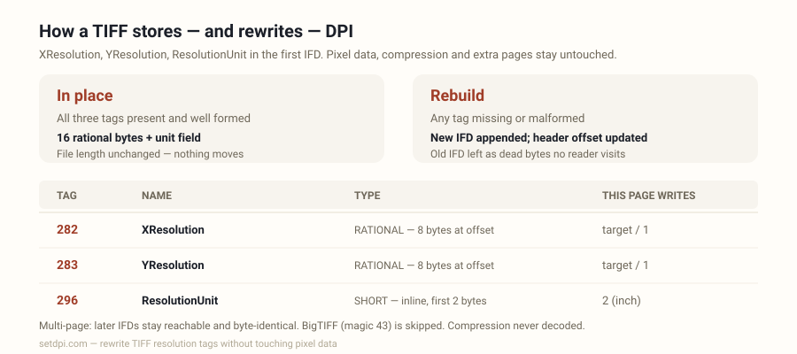

TIFF DPI Changer
Drop a TIFF — its XResolution, YResolution and ResolutionUnit tags are rewritten to 300 DPI (or any value) in your browser. Pixel data, compression and extra pages stay untouched. Nothing is uploaded.

How to change TIFF DPI in the browser
Add TIFF files
Drop TIFF files above, or click to browse. The file picker accepts .tif / .tiff / image/tiff. Up to 50 files are kept from each drop. Non-TIFF and BigTIFF files are skipped with a per-file notice — no alert.
Choose the target DPI (300 is preselected)
300 is selected when the page loads. Use 72, 96, 150, 200, 600 or 1200, or type a custom integer from 1 to 10000. The print-size line on each row updates to pixels ÷ DPI.
Download
Click Download. The resolution tags in the first IFD are rewritten in the browser. Pixel data is untouched and nothing is uploaded. A file called name.tif tagged 300 is saved as name_300dpi.tif; the original extension is kept.
Each dropped file is read as a byte array in the page. The first four bytes are checked: II followed by 42 (little-endian) or MM followed by 42 (big-endian) is a classic TIFF. A file that starts II or MM followed by 43 is a BigTIFF and is skipped with a notice saying so; anything else is skipped with a notice pointing to the JPEG DPI changer, the PNG DPI changer and the homepage. A classic TIFF whose first IFD lies inside the file is listed with its current resolution reading (or a “DPI not set” badge), its pixel size read from the ImageWidth and ImageLength tags, and — when walking the IFD chain finds more than one page — a page count.
Most browsers cannot decode TIFF, so this page does not attempt a preview: the row shows a neutral TIFF placeholder instead of a thumbnail, and this page never decodes the image at all. Download (and Download all) works on the original bytes. The saved name is the original stem, an underscore, the target DPI, the letters dpi, and the original extension. Clearing the list also hides the skip notice and removes its rows.
How a TIFF stores resolution: XResolution, YResolution, ResolutionUnit
A TIFF starts with an 8-byte header: two bytes of byte order (II for little-endian, MM for big-endian), the 16-bit magic number 42, and a 32-bit offset to the first image file directory (IFD). An IFD is a 16-bit entry count, that many 12-byte entries, and a 32-bit offset to the next IFD (0 when there is none). Each entry holds a 16-bit tag, a 16-bit type, a 32-bit count, and a 4-byte field that carries the value itself when it fits in 4 bytes and otherwise an offset to where the value is stored.
Resolution lives in three tags. XResolution (282) and YResolution (283) are RATIONAL: two unsigned 32-bit integers, numerator then denominator, 8 bytes in total, so the entry field is an offset to those 8 bytes. ResolutionUnit (296) is a SHORT stored inline in the first two bytes of the field: 1 means no absolute unit, 2 means inch, 3 means centimetre. When the tag is absent, the TIFF 6.0 specification makes the default 2, inch. A file tagged 300 DPI therefore carries 300/1 in both rationals and a unit of 2 (or no unit tag at all).
| Tag | Name | Type | Where the value lives | What this page writes |
|---|---|---|---|---|
| 282 | XResolution | RATIONAL (5), count 1 | 8 bytes at the offset in the entry field | target / 1 |
| 283 | YResolution | RATIONAL (5), count 1 | 8 bytes at the offset in the entry field | target / 1 |
| 296 | ResolutionUnit | SHORT (3), count 1 | Inline, first 2 bytes of the entry field | 2 (inch) |
Reading follows those rules: the numerator is divided by the denominator, multiplied by 2.54 when the unit is centimetre, and rounded to the nearest whole number for the badge. Only XResolution is read for the badge; YResolution is written on download but not read. A unit of 1, a zero numerator or denominator, a missing XResolution, or a rational whose offset lies outside the file is shown as “DPI not set”. Both byte orders are read and written in the file's own order; nothing is converted between II and MM.
What is rewritten in place and what is appended
There are two paths, chosen by what the first IFD already contains.
In place. When XResolution, YResolution and ResolutionUnit are all present and well formed — the two rationals with count 1 and an offset inside the file, the unit a count-1 SHORT — the page overwrites the 8 bytes of each rational with target/1 and the unit field with 2, in the file's own byte order. Sixteen rational bytes and the unit's 4-byte field change; nothing moves; the file length is unchanged and the header is untouched.
Rebuild. When any of the three is missing or malformed, the page rebuilds the first IFD by appending, never by shifting. It copies the file, pads it to an even length if needed, appends an 8-byte target/1 rational for each missing XResolution or YResolution (each at a word-aligned offset; a missing ResolutionUnit needs no appended bytes because a SHORT fits inside its new entry), then writes a new IFD at the end: the original entries copied verbatim (well-formed resolution entries kept and overwritten in place as above, malformed ones dropped), the new entries added, the whole list sorted by tag as the specification requires, and the original next-IFD pointer copied across. Finally the 32-bit first-IFD offset in the header is pointed at the new IFD. The old IFD stays in the file as dead bytes that no reader visits.
| Condition | What changes | File length |
|---|---|---|
| All three tags present and well formed | 16 rational bytes and the 4-byte unit field | Unchanged |
| One or more missing or malformed | Header offset (4 bytes); an 8-byte rational appended for each missing XResolution / YResolution; new IFD appended | Grows by at most 1 padding byte, 8 bytes per added rational, and 6 + 12 × entries for the new IFD |
On both paths the strip or tile data is never read, decoded, moved or modified. Entries that carry offsets — StripOffsets, TileOffsets, colour maps, ICC profiles, EXIF sub-IFDs — still point at the same bytes, because nothing before the original end of the file moves. The sample TIFF button builds a 160 × 120 pixel, 8-bit greyscale, uncompressed TIFF with no resolution tags in the page, so it always takes the rebuild path: its row shows “DPI not set”, and the downloaded copy carries the target value.
Multi-page TIFF and BigTIFF: the limits
Multi-page TIFF. Only the first IFD is rewritten. Its next-IFD pointer is preserved on both paths, so later pages remain reachable and byte-identical: a scanned document saved as one page per IFD keeps every page, and only page one's density changes. The row counts pages by following the chain — stopping at 0, at a repeated or out-of-range offset, or after 1024 directories — and shows the count when it is above one, together with a note that only the first page's tags are rewritten.
BigTIFF. Files whose magic number is 43 use 64-bit offsets and 20-byte entries. This page parses classic 32-bit structures only, so a BigTIFF is skipped with a per-file notice that says so and is never modified.
Compression and tiling. Because pixel data is never decoded, the compression tag is never consulted: uncompressed, LZW, ZIP (Deflate), PackBits, CCITT and JPEG-compressed TIFFs, in stripped or tiled layouts, all go through the same tag rewrite with their data copied unchanged.
Broken files. A file with a classic header whose first IFD offset lies outside the file, or whose entry table would run past the end, cannot be read and is skipped with a notice rather than listed.
Scanner TIFFs are often 300 or 600 DPI already
Scanner software normally writes the scan setting into XResolution and YResolution, so a TIFF scanned at 300 or 600 DPI usually arrives with those tags already set. Dropping such a file here and reading the badge is a valid use of the page on its own: the badge is read from the tags, nothing is downloaded until you click, and nothing is uploaded at any point.
Download when the badge disagrees with what the job needs: a scan saved at a screen value such as 72 or 96, an export whose unit is 1 (no absolute unit, shown as “DPI not set”), or a file that has no resolution entries at all. A file whose ResolutionUnit is 3 (centimetre) is shown in inches on read — the stored pixels-per-centimetre value multiplied by 2.54 and rounded — and written back as inch with the target value, so a file storing 11811/100 per centimetre reads as 300 DPI here.
The badge shows the value the tags hold; it does not measure the scan. If a 600 DPI scan was later resampled to fewer pixels, the tag may still read 600. Print inches = pixels ÷ DPI: the row's print-size line and the small-print warning use the ImageWidth and ImageLength tags for that arithmetic, and stay blank when those tags are absent.
Print shops, archives and where a 300 DPI TIFF is required
TIFF is the lossless container that print and archive pipelines commonly ask for: press-ready artwork, archival master scans, and journal figures where JPEG artefacts are unwelcome. Those pipelines typically read the same XResolution and YResolution tags this page rewrites (the badge here reads XResolution), and a file tagged 72 may be bounced as low resolution even when it holds plenty of pixels. Rewriting the tags to 300 (or the number on the brief) is what this page does; it adds no pixels.
| Job | Typical density ask |
|---|---|
| Press-ready artwork and packaging | Typically 300 DPI |
| Archival master scans of documents and photos | Commonly 300–600 DPI |
| Journal halftone figures | Typically 300–600 DPI |
| Journal line-art figures | Typically 600–1200 DPI |
| Large-format posters and banners | Often 150–300 DPI |
| Screens | 72–96 DPI, and typically ignored |
Print inches = pixels ÷ DPI. A 2400 × 3000 px TIFF tagged 300 claims 8 × 10 in; tagged 72 it claims 33.3 × 41.7 in. The row shows that print size for the current target in inches and centimetres, and warns when both sides fall under 4 in that a higher tag will not create a larger sharp print.
Use 300 when that is the number a print checklist or figure guide typically wants to see on a TIFF. Use 600 or 1200 when a line-art guideline asks for it. Use 72 or 96 only when you mean a screen density. The presets and the custom box cover those values; the downloaded rationals are the integer you selected over 1, with unit 2.